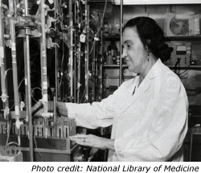

»Rosalyn Yalow«

The career of Rosalyn Yalow, the 1977 winner of the Nobel Prize in Medicine+, could easily be a story of the power of individual genius and extraordinary determination. A closer look at Yalow's life, however, suggests that her story is as much about the support and mentoring that contributed to her success as it is about the obstacles and barriers that she had to overcome. Furthermore, Yalow's early positive experiences with mentors may explain the high value that she subsequently placed on her own role as a mentor, considering it to be an integral part of her career in scientific research.
Yalow, a Jewish woman born in 1921 to parents who had dropped out before high school, no doubt defied overwhelming odds merely to attain a successful career, let alone achieve the highest level of excellence in science. Indeed, by all accounts Yalow was extremely determined, even stubborn, in her pursuit of a scientific career. Her aggressiveness functioned as a means for her to obtain proper guidance and instruction as an aspiring scientist. As a child, Yalow's interests were shaped by teachers that she credits with helping direct her natural abilities. Having initially focused on mathematics, Yalow writes that in high school "a great chemistry teacher ... excited my interest in chemistry," while later, at Hunter College, "my interest was diverted to physics especially by Professors Herbert N. Otis and Duane Roller." According to Yalow, she was able to ignore social and family pressures to choose a more practical career as an elementary-school teacher because "my physics professors encouraged me and I persisted."1
Yalow attributes her exceptional accomplishments as compared with those of other talented scientists to her being more aggressive. Maurice Goldhaber, Yalow's thesis adviser at the University of Illinois, describes her style:
For research you need a little aggressiveness.... She would come to me to discuss her progress and that's when she was usually a little impatient. If I was busy or something, she'd want my attention.... It was because she was going somewhere.2
Yalow had the personal drive and capability to be "going somewhere," but she knew instinctively that she needed the help of mentors to get her there.
After obtaining her doctorate in physics at the University of Illinois, Yalow took the first steps toward what would become her lifelong work - the application of nuclear physics to biomedical research - as an apprentice to Edith Quimby, a renowned medical physicist at Columbia's College of Physicians and Surgeons. Quimby recommended Yalow to her influential boss, Gioacchino Failla, and he connected Yalow with Bernard Roswit, the chief of radiation therapy at Bronx Veterans Administration Hospital, who had asked for help in setting up a radioisotope service.
At the Bronx V.A. Hospital, Yalow initiated a research partnership with the physician Solomon Berson, marking the beginning of a close and immensely productive collaborative relationship. Together, Yalow and Berson expanded the radioisotope service, establishing a first-rate laboratory that became the source of groundbreaking research, including the development of radioimmunoassay (RIA), a highly sensitive tool with significant and far-reaching applications, using radioactivity to measure hormones in the blood.*
Throughout the 22 years of their collaboration, and despite their growing prominence as scientists, Yalow and Berson's laboratory retained a "mom-and-pop shop" feel, attracting numerous talented trainees who would come to receive hands-on training and eventually become leading scientists in various fields. Explaining her remarkable refusal to patent RIA and her nonchalance at the missed opportunity for financial gain, Yalow summed up her approach to research:
If I had five million dollars a year for research, it would be necessary for me to supervise a hundred scientists. It would be impossible for me to talk to each one of them every day.... I'm psychologically adjusted to "mom and pop" science.3
Yalow and Berson each had a different style of mentoring: Yalow provided consistent, practical day-to-day instruction, while Berson's power and intensity balanced out his more erratic style. Eugene Straus writes:
More than one scientist came away ... with the observation that Berson had inspired his interest and understanding ... but that sitting at the laboratory and working alongside Yalow provided the deepest appreciation and insight regarding what their work was creating.4
Straus writes that Yalow was "always available, always willing to help," in contrast to Berson, who "needed more privacy." On the other hand, as a male physician Berson had considerably more clout than Yalow; because of his important connections, Berson was in a better position to help his trainees in their careers. According to Straus, "it was Sol who could pick up the phone ... and that was it: job landed."5
Yalow was known to have a tough and intimidating personal style, yet she regarded the many scientists that she trained to be her "professional children." The M.I.T. professor Mildred Dresselhaus, past president of both the American Physical Society and the American Association for the Advancement of Science, as well as the director of the federal government's Office of Science, talks about the role that Yalow had in shaping her career development:
I was the top student in math and all the physical sciences. But, like Ros, I was told there was no career in this.... I didn't know anything about careers in science. Rosalyn was the first person who suggested that to me.... Ros told me to attend the physics colloquium at Columbia University.... Then she encouraged me to go to graduate school and seek a substantive career, and it seemed like such a long way, but she acted as if I should just go for it.6
Throughout her life, in seeking out mentors as well as in initiating collaborative relationships and mentoring others, Yalow's consistent purpose has been to further scientific discovery and knowledge. To that end, she has both utilized and remained committed to mentoring; this is apparent in her early ability to elicit and obtain critical support from mentors and in her subsequent guidance of others, as she emphasized, "not only in learning our research techniques but also our philosophy."7
Reference Notes:
+ Among her many honors, in addition to the Nobel Prize, Yalow received the National Medal of Science in 1988 and was elected as a member of the National Academy of Sciences in 1975, and the American Academy of Arts and Sciences in 1979. In 1976, she was the first woman to receive the highly prestigious Albert Lasker Basic Medical Science Award. back
1 Rosalyn Yalow, Rosalyn Yalow-Autobiography, p. 1. Le Prix Nobel (Nobel Foundation, 1977) back
2 Eugene Straus, Nobel Laureate Rosalyn Yalow: Her life and Work in Medicine, p. 38. (Cambridge, Massachusetts: Perseus Books, 1998) back
* While injecting subjects with insulin to compare how quickly it is metabolized in groups of diabetics and non-diabetics, Yalow and Berson unexpectedly observed that diabetics processed insulin at a slower rate than non-diabetics. In similar tests, non-diabetic schizophrenics who had undergone treatment with insulin showed the same retarded processing as diabetics; furthermore, diabetics who had never been treated with insulin metabolized the insulin at a rate similar to that of the non-diabetics who had never been treated with insulin. These findings seemed to suggest that prior insulin treatment, rather than the presence of diabetes, slows down the processing of insulin. Yalow and Berson came to the conclusion that subjects who had undergone insulin treatment developed insulin-binding antibodies as an immunologic response to the presence of foreign insulin. The idea that a small protein such as insulin could stimulate antibodies was both novel and controversial; at the time, Yalow and Berson were not permitted to refer to insulin as an antibody in their published report. However, Yalow and Berson persisted and developed radioimmunoassay (RIA), a highly sensitive tool, based on their finding that insulin produces antibodies. They used RIA to measure the quantity of insulin in a blood sample by mixing it with known quantities of radioactively-labeled insulin and antibody molecules. Yalow and Berson reasoned that if insulin binds to antibody molecules, then the observable amount of radioactive insulin that binds to the antibody molecules would be an indication of the amount of insulin in the blood; since both have equal access to the antibodies, measuring how much of the radioactive insulin successfully binds to the molecules is an inverse measure of the amount of insulin in the blood.
Because radioimmunoassay can be used with any chemical that produces an antibody, Yalow and Berson’s discovery had a major impact on the field of endocrinology and clinical medicine, laying the groundwork for countless future scientific developments. RIA is now used to measure and detect hypothyroidism in infants (which can lead to mental retardation), hepatitis-B virus, drug concentrations, hormone levels affecting fertility, human growth hormone, and numerous other substances. back
3 Sharon Bertsch McGrayne, Nobel Prize Women in Science: Their Lives, Struggles, and Momentous Discoveries, p. 348. (Washington, D.C.: Joseph Henry Press, 2001) back
4 Eugene Straus, Nobel Laureate Rosalyn Yalow: Her life and Work in Medicine, p. 232. (Cambridge, Massachusetts: Perseus Books, 1998) back
5 Eugene Straus, Nobel Laureate Rosalyn Yalow: Her life and Work in Medicine, p. 196. (Cambridge, Massachusetts: Perseus Books, 1998) back
6 Eugene Straus, Nobel Laureate Rosalyn Yalow: Her life and Work in Medicine, p. 66. (Cambridge, Massachusetts: Perseus Books, 1998) back
7 Rosalyn Yalow, Rosalyn Yalow-Autobiography, p. 4. Le Prix Nobel (Nobel Foundation, 1977) back